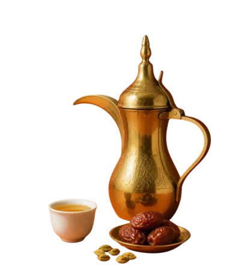
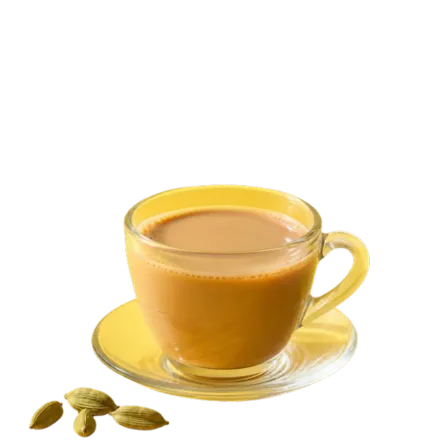
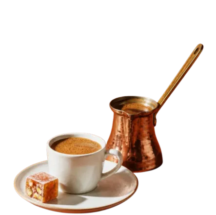
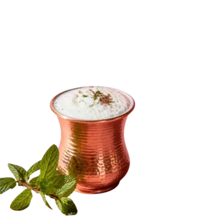
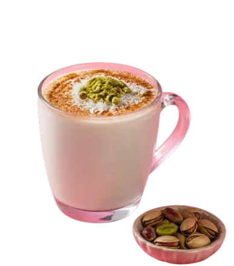
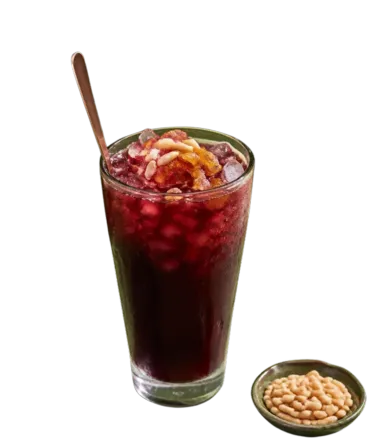
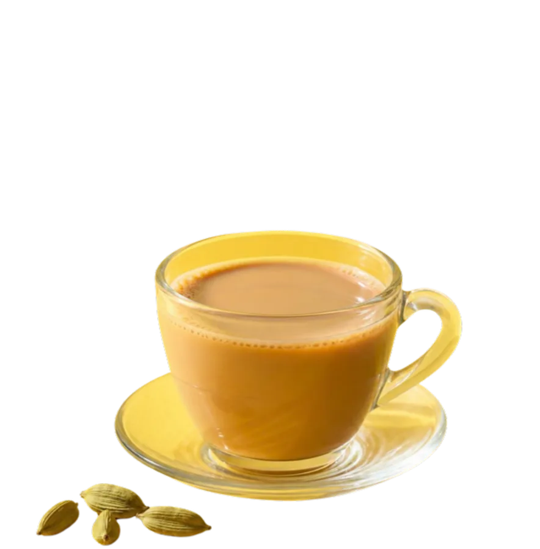
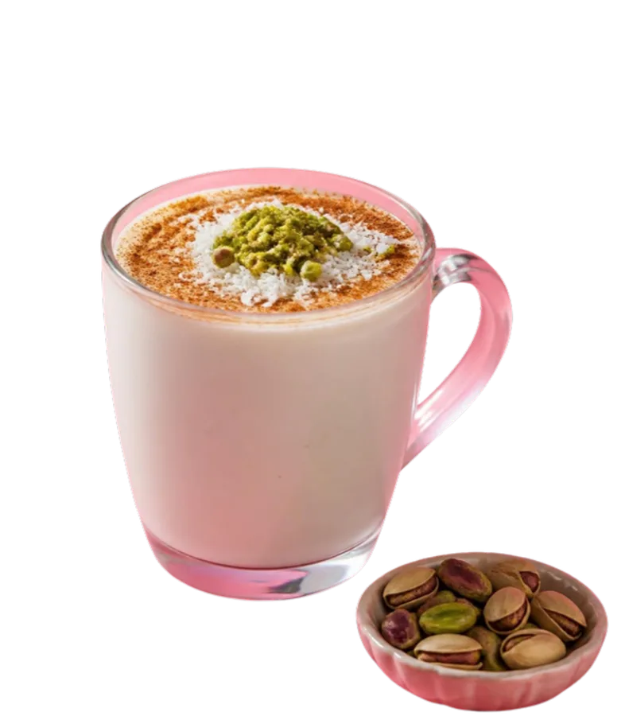
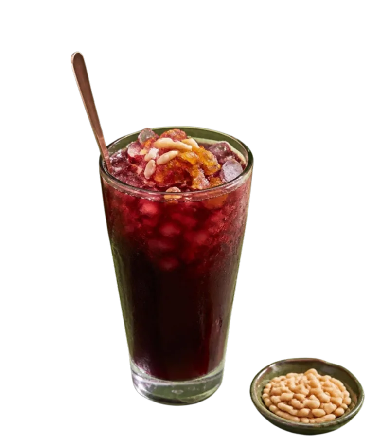

no stalls like that here. try another market?
- قهوة عربية

Arabic coffee
- شاي كرك

Karak chai
- Türk kahvesi

Turkish coffee
- ayran

Ayran
- سحلب

Sahlab
- جلاب

Jallab

Arabic coffee
قهوة عربيةPale, spiced with cardamom and poured a little at a time into cups the size of a thimble. Across the Arabian Peninsula, it’s how you say welcome.
What’s in it
Karak chai
شاي كركBlack tea boiled hard with evaporated milk, cardamom and plenty of sugar. The Gulf’s favourite pit stop.
What’s in it- Evaporated milk · from your pantry
- Sugar · from your pantry

Turkish coffee
Türk kahvesiFinely ground coffee simmered in a small pot called a cezve, served with the grounds settled at the bottom of the cup.
What’s in it- Sugar, if you like · from your pantry
- Cold water · from the tap

Ayran
ayranYoghurt, cold water and a pinch of salt, whisked until it froths. Lunch’s best friend.
What’s in it- Plain yoghurt · from your fridge
- Cold water · from the tap
- Salt · from your pantry

Sahlab
سحلبHot milk thickened with orchid-root flour, scented with rosewater or orange blossom, and topped with cinnamon, pistachios and coconut.
What’s in it- Whole milk · from your fridge

Jallab
جلابGrape molasses, dates and rose water poured over crushed ice and topped with pine nuts and golden raisins. Sweet, a little smoky, and everywhere during Ramadan.
What’s in it- Crushed ice · from your freezer